Sparse Linear Regression
A demonstration of sparse linear regression using SparseReg toolbox. Sparsity is in the general sense: variable selection, total variation regularization, polynomial trend filtering, and others. Various penalties are implemented: elestic net (enet), power family (bridge regression), log penalty, SCAD, and MCP.
Contents
Sparse linear regression (n>p)
Simulate a sample data set (n=500, p=100)
clear; s = RandStream('mt19937ar','Seed',1); RandStream.setGlobalStream(s); n = 500; p = 100; X = randn(n,p); % generate a random design matrix X = bsxfun(@rdivide, X, sqrt(sum(X.^2,1))); % normalize predictors X = [ones(size(X,1),1) X]; % add intercept b = zeros(p+1,1); % true signal: b(2:6) = 3; % first 5 predictors are 3 b(7:11) = -3; % next 5 predictors are -3 y = X*b+randn(n,1); % response vector
Sparse regression at a fixed tuning parameter value
penalty = 'enet'; % set penalty function to lasso penparam = 1; penidx = ... % leave intercept unpenalized [false; true(size(X,2)-1,1)]; lambdastart = ... % find the maximum tuning parameter to start max(lsq_maxlambda(sum(X(:,penidx).^2),-y'*X(:,penidx),penalty,penparam)); display(lambdastart); lambda = 0.9*lambdastart; % tuning parameter value betahat = ... % lasso regression lsq_sparsereg(X,y,lambda,'penalty',penalty,'penparam',penparam,'penidx',penidx); figure; % plot penalized estimate bar(0:length(betahat)-1,betahat); xlabel('j'); ylabel('\beta_j'); xlim([-1,length(betahat)]); title([penalty '(' num2str(penparam) '), \lambda=' num2str(lambda,2)]); lambda = 0.5*lambdastart; % try a smaller tuning parameter value betahat = ... % sparse regression lsq_sparsereg(X,y,lambda,'penalty',penalty,'penparam',penparam,'penidx',penidx); figure; % plot penalized estimate bar(0:length(betahat)-1,betahat); xlabel('j'); ylabel('\beta_j'); xlim([-1,length(betahat)]); title([penalty '(' num2str(penparam) '), \lambda=' num2str(lambda,2)]);
lambdastart =
5.1621
 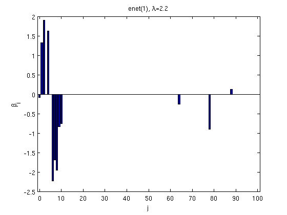
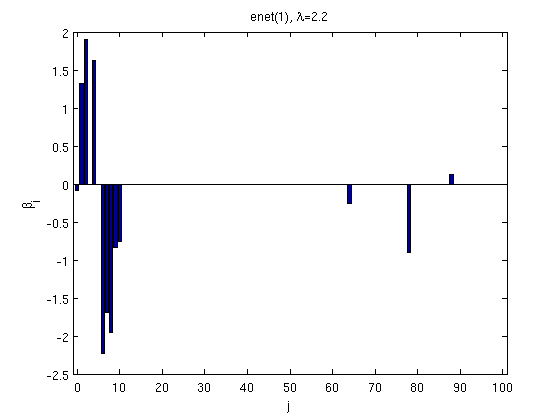 Solution path for lasso
penalty = 'enet'; % set penalty function penparam = 1; penidx = [false; true(size(X,2)-1,1)]; % leave intercept unpenalized tic; [rho_path,beta_path] = ... % compute solution path lsq_sparsepath(X,y,'penalty',penalty,'penparam',penparam,'penidx',penidx); timing = toc; figure; plot(rho_path,beta_path); xlabel('\rho'); ylabel('\beta(\rho)'); xlim([min(rho_path),max(rho_path)]); title([penalty '(' num2str(penparam) '), ' num2str(timing,2) ' sec']);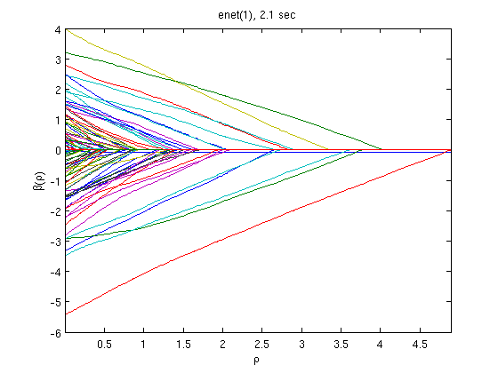
Solution path for power (0.5)
penalty = 'power'; % set penalty function to power penparam = 0.5; tic; [rho_path,beta_path] = ... lsq_sparsepath(X,y,'penalty',penalty,'penparam',penparam,'penidx',penidx); timing = toc; figure; plot(rho_path,beta_path); xlabel('\rho'); ylabel('\beta(\rho)'); xlim([min(rho_path),max(rho_path)]); title([penalty '(' num2str(penparam) '), ' num2str(timing,2) ' sec']);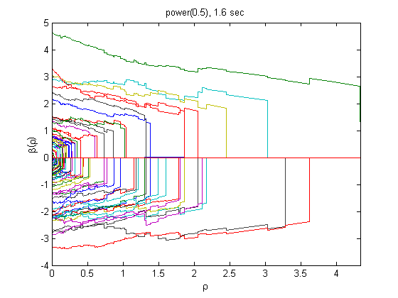
Compare solution paths from different penalties
penalty = {'enet' 'enet' 'enet' 'power' 'power' 'log' 'log' 'log' 'scad'};
penparam = [1 1.5 2 0.5 1 0 1 5 3.7];
penidx = [false; true(size(X,2)-1,1)]; % leave intercept unpenalized
figure
for i=1:length(penalty)
tic;
[rho_path,beta_path] = lsq_sparsepath(X,y,...
'penalty',penalty{i},'penparam',penparam(i),'penidx',penidx);
timing = toc;
subplot(3,3,i);
plot(rho_path,beta_path);
if (i==8)
xlabel('\rho');
end
if (i==4)
ylabel('\beta(\rho)');
end
xlim([min(rho_path),max(rho_path)]);
title([penalty{i} '(' num2str(penparam(i)) '), ' num2str(timing,1) 's']);
end
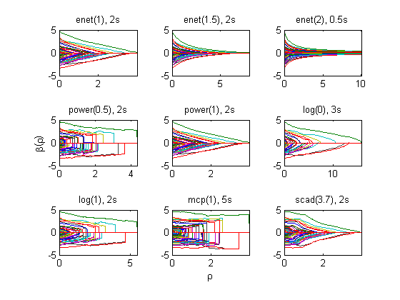 Fused linear regression
Fused lasso (fusing the first 10 predictors)
D = zeros(9,size(X,2)); % regularization matrix for fusing first 10 preds D(10:10:90) = 1; D(19:10:99) = -1; display(D(1:9,1:11)); penalty = 'enet'; % set penalty function to lasso penparam = 1; tic; [rho_path, beta_path] = lsq_regpath(X,y,D,'penalty',penalty,'penparam',penparam); timing = toc; figure; plot(rho_path,beta_path(2:11,:)); xlabel('\rho'); ylabel('\beta(\rho)'); xlim([min(rho_path),max(rho_path)]); title([penalty '(' num2str(penparam) '), ' num2str(timing,2) ' sec']);
ans =
0 1 -1 0 0 0 0 0 0 0 0
0 0 1 -1 0 0 0 0 0 0 0
0 0 0 1 -1 0 0 0 0 0 0
0 0 0 0 1 -1 0 0 0 0 0
0 0 0 0 0 1 -1 0 0 0 0
0 0 0 0 0 0 1 -1 0 0 0
0 0 0 0 0 0 0 1 -1 0 0
0 0 0 0 0 0 0 0 1 -1 0
0 0 0 0 0 0 0 0 0 1 -1
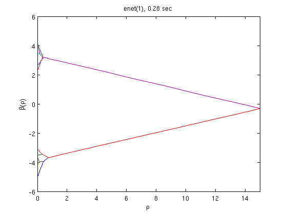 Same fusion problem, but with power, log, MCP, and SCAD penalty
penalty = {'enet' 'power' 'log' 'mcp'};
penparam = [1.5 0.5 1 1];
for i=1:length(penalty)
tic;
[rho_path, beta_path] = lsq_regpath(X,y,D,'penalty',penalty{i},...
'penparam',penparam(i));
timing = toc;
subplot(2,2,i);
plot(rho_path,beta_path(2:11,:));
xlim([min(rho_path),max(rho_path)]);
title([penalty{i} '(' num2str(penparam(i)) '), ' num2str(timing,1) 's']);
end
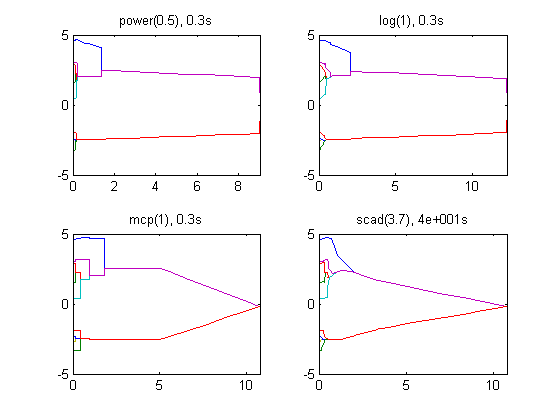 Sparse linear regression (n<p)
Simulate another sample data set (n=100, p=1000)
clear; n = 100; p = 1000; X = randn(n,p); % generate a random design matrix X = bsxfun(@rdivide, X, sqrt(sum(X.^2,1))); % normalize predictors X = [ones(size(X,1),1) X]; % add intercept b = zeros(p+1,1); % true signal b(2:6) = 3; % first 5 predictors are 3 b(7:11) = -3; % next 5 predictors are -3 y = X*b+randn(n,1); % response vector
Solution path for lasso
maxpreds = 51; % run solution path until 50 predictors are in penalty = 'enet'; % set penalty function penparam = 1; penidx = [false; true(size(X,2)-1,1)]; % leave intercept unpenalized tic; [rho_path,beta_path,eb_path] = lsq_sparsepath(X,y,'penidx',penidx, ... 'maxpreds',maxpreds,'penalty',penalty,'penparam',penparam); timing = toc; [~,ebidx] = min(eb_path); figure; plot(rho_path,eb_path); xlabel('\rho'); ylabel('EBC'); xlim([min(rho_path),max(rho_path)]); title([penalty '(' num2str(penparam) '), ' num2str(timing,2) ' sec']); line([rho_path(ebidx), rho_path(ebidx)], ylim); figure; plot(rho_path,beta_path); xlabel('\rho'); ylabel('\beta(\rho)'); xlim([min(rho_path),max(rho_path)]); title([penalty '(' num2str(penparam) '), ' num2str(timing,2) ' sec']); line([rho_path(ebidx), rho_path(ebidx)], ylim);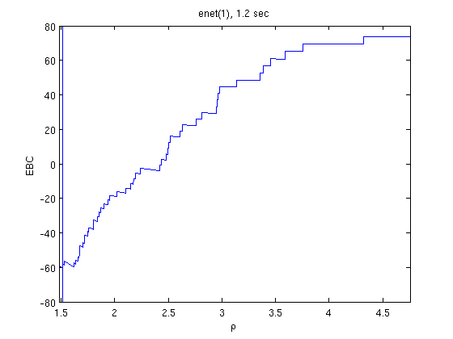 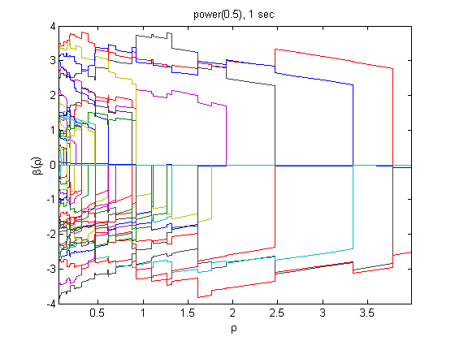
Solution path for power (0.5)
penalty = 'power'; % set penalty function to power penparam = 0.5; tic; [rho_path,beta_path,eb_path] = lsq_sparsepath(X,y,'penidx',penidx, ... 'maxpreds',maxpreds,'penalty',penalty,'penparam',penparam); timing = toc; [~,ebidx] = min(eb_path); figure; plot(rho_path,eb_path); xlabel('\rho'); ylabel('EBC'); xlim([min(rho_path),max(rho_path)]); title([penalty '(' num2str(penparam) '), ' num2str(timing,2) ' sec']); line([rho_path(ebidx), rho_path(ebidx)], ylim); figure; plot(rho_path,beta_path); xlabel('\rho'); ylabel('\beta(\rho)'); xlim([min(rho_path),max(rho_path)]); title([penalty '(' num2str(penparam) '), ' num2str(timing,2) ' sec']); line([rho_path(ebidx), rho_path(ebidx)], ylim);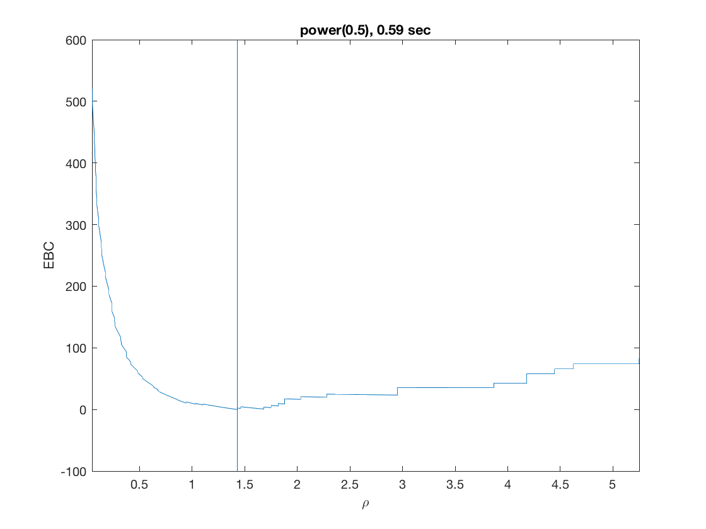 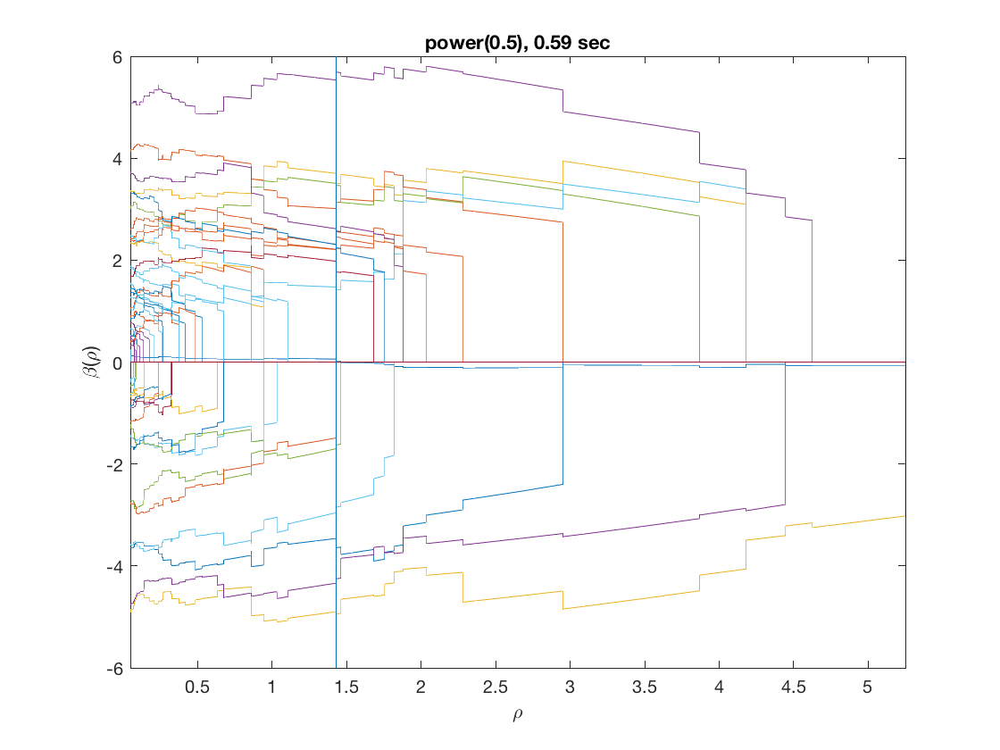